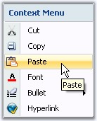

Menu Item Tooltips
The menu items can display tooltips while mouse hovering, by enabling ShowItemToolTips property.
|
[C#]
this.contextMenuStripEx1.ShowItemToolTips = true; |
|
[VB.NET]
Me.contextMenuStripEx1.ShowItemToolTips = True |

Figure 1431: Tooltip displayed for Paste ToolStripItem
Auto Closing At Runtime
AutoClose property of the ContextMenuStrip control, when set to true, will close the context menu dropdown when the user clicks any item. If this is not enabled, the menu items will not be closed even after user actions.
|
Property |
Description |
|
AutoClose |
Specifies whether the context menu closes for any user actions at runtime.
· True - Closes the context menu dropdown, when the user selects or clicks any item. · False - The context menu drop down will not be closed for any user actions. |
|
[C#]
this.contextMenuStripEx1.AutoClose = true; |
|
[VB.NET]
Me.contextMenuStripEx1.AutoClose = True |